Improve Front-end Security
XSS
XSS: Cross-site scripting (also known as XSS) is a web security vulnerability that allows an attacker to compromise the interactions that users have with a vulnerable application. It allows an attacker to circumvent the same origin policy, which is designed to segregate different websites from each other. Cross-site scripting vulnerabilities normally allow an attacker to masquerade as a victim user, to carry out any actions that the user is able to perform, and to access any of the user's data.How does it work? Cross-site scripting works by manipulating a vulnerable web site so that it returns malicious JavaScript to users. There are three main XSS attacks:
-
Reflected XSS: where the malicious script comes from the
current HTTP request, e.g.
https://insecure-website.com/status?message=<script>/*Bad+stuff+here*/</script>// preventions // server side app.get('/welcome', function(req, res) { // encode query parameters res.send(`${encodeURIComponent(req.query.type)}`); }); -
Stored XSS: where the malicious script comes from the
website's database, e.g. get comments from database and render
the comments
// safe comment <p>Hello, this is a safe comment</p> // if server side doesn't perform any processing of the comment entered by user // an attacker can send a dangerous message like the following message // The message is saved to server and then sent back to a browser <p><script>/*dangerous stuff*/</script></p> // preventions // case1: data client => server // client side: validate data /escape data /filter data // server side: escape data /filter data /save data // case2: data server => client // server side: escape // client side: escape/filter // key APIS: // encodeURI, encodeURIComponent, decodeURI, decodeURIComponent,etc. -
DOM-based XSS: where the vulnerability exists in
client-side code rather than server-side code, e.g.
process data from an untrusted source in an unsafe way ,
usually by writing directly the data to the DOM. Please try to
substitute .innerText, .textContent, .setAttributes for
.innerHTML, .outerHTML, .appendChild, document.write() APIs.
// dangerous code var search = document.getElementById('search').value; var results = document.getElementById('results'); results.innerHTML = 'You searched for:' + search; // without processing entered data, an attack can construct a malicious value that causes your script like that: You searched for: <img src=1 onerror='/* bad stuff */' /> You searched for: <a href="javascript:doSomething();"> click me</a> You searched for: <iframe style="display:none" src="...."> </iframe> // preventions // filter and encode/escape data // for non-url attributes function encodeHtml(str) { return str.replace(/"/g, '"') .replace(/'/g, ''') .replace(/</g, '<') .replace(/>/g, '>'); } $('#security').click(function () { let commend = $('#comments').val(); alert(commend); // escape entered content // for url link, e.g. image src : encodeURIComponent if ($.trim(commend)) { $('.list-group').append( `<li class="list-group-item">${encodeHtml(commend)}</li>` ); $('#comments').val(''); } }); }); // for url of image, iframe, anchors $('#image1').attr('src',encodeURI('http://dangerous-website/untrusted.jpg')); $('#iframe1').attr('src', encodeURI('https://dangerous-website.com')); $('#anchor1').attr('href', encodeURI('https://dangerous-website.com'));
FAQ: store JWT token in cookie or localStorage?
-
cookie:
- Profit: If on server side set a cookie's httponly attribute as true, it is impossible to access the token in a XSS attack. Explanation: An HttpOnly Cookie is a tag added to a browser cookie that prevents client-side scripts from accessing data. It provides a gate that prevents the specialized cookie from being accessed by anything other than the server. This does not mean the app is not vulnerable to XSS.It only means in case of a successful XSS attack, the token will not be accessible to the attacker.
- Cookie is part of HTTP headers. As authentication info, it is sent automatically with requests( It is not the case in Angular). It is necessary to explicitly protect your app against CSRF
- Can only be sent to their origin(not to say APIS on different domains)
- The token could probably be replaced by a plain old session id in that cookie as your app is likely not really stateless anyway( It is exactly what I have done in the following example.)
- If the app talks to several backends on different domain, short-lived access tokens in localStorage + long-lived refresh token in a httpOnly cookie is appropriate
// server side const SESSION_ID = 'connect.sid'; let id=....; // cookie is valid in 15 minutes // An HttpOnly Cookie is a tag added to a browser cookie // that prevents client-side scripts from accessing data. res.cookie(SESSION_ID, id,{expires: new Date(Date.now( ) ) + 900000,httpOnly:true}); // or res.cookie(SESSION_ID, id,{maxAge: 900000, httpOnly:true});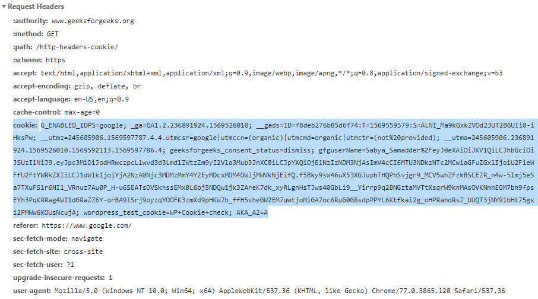 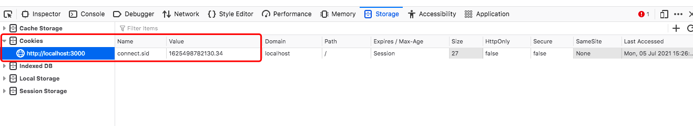 -
localStorage
- Can be accessed by javascript, which includes a successful XSS attack.
- Because a token in localStorage is not sent automatically as a request header, no further protection is usually necessary against CSRF
- Tokens can be sent to different origins.This is the main benefit.If you only want to send the token to your single app origin, you probably don't need JWTs at all, and definitely don't want to use localStorage.
How to prevent XSS attacks
- Filter input on arrival.
- Encode data on output. Need combine HTML, URL, Javascript, and CSS coding.
- Use appropriate response headers.You can use the Content-Type and X-Content-Type-Options to ensure browsers interpret the response in the way you intend
- Http-only Cookie
- CAPTCHA: determine whether or not user is human
-
Use content Security Policy as a last line of defense. For more information...
// server side // same origin Content-Security-Policy: default-src 'self' // only https, no embedded object Content-Security-Policy: default-src https: 'unsafe-eval' 'unsafe-inline'; object-src 'none' // not deploy the policy, only report the actions that violate the policy Content-Security-Policy-Report-Only: default-src https:; report-uri /csp-violation-report-endpoint/ // client side , in .html file . // meta tag // meta tag cannot use report <meta http-equiv="Content-Security-Policy" content="default-src https:"> -
Find and test XSS vulnerabilities with web application
security scanners
- 1. Arachni
- a Free/Public-Source Web Application Security Scanner aimed towards helping users evaluate the security of web applications.
- 2. Mozilla HTTP Observatory
- a set of tools to analyze your website and inform you if you are utilizing the many available methods to secure it.
- 3. w3af
- Open Source Web Application Security Scanner. A Web Application Attack and Audit Framework.
CSRF
// attack example
// localhost:3001 user "victim" has logged in
// localhost:3002 use the authenticated user "victim" to execute a post method
<form
name="stealMoney"
action="http://localhost:3001/api/transfer"
method="post"
>
<input type="text" name="payee" value="victim" />
<input type="text" name="amount" value="2000" />
</form>
// preventions
// 1, add CAPTCHA : user need entre verification code manually for every transaction
// server side
app.get('/api/userinfo', (req, res) => {
let info = session[req.cookies[SESSION_ID]];
/** add verification code */
// data:svg, text: verification code
let { data, text } = svgCaptcha.create();
if (info) {
// logged in
let username = info.user.username;
info.code = text; // next request,compare verification code
res.json({
code: 0,
info: { username, account: info.user.account, svg: data },
});
} else {
res.json({ code: 1, error: 'user not logged in.' });
}
});
// when client side execute a transfer, server site get the verification code from request
app.post('/api/transfer1', (req, res) => {
let info = session[req.cookies[SESSION_ID]];
if (info) {
// logged in
let { payee, amount, code } = req.body;
}
}
// 2, check the source of referrer ( not safe, referrer can be modified)
// server side
// referer: where does the request
app.post('/api/transfer2', (req, res) => {
let info = session[req.cookies[SESSION_ID]];
if (info) {
// logged in
let { payee, amount } = req.body;
let referer = req.headers['referer'] || '';
if (Number(amount) && referer.includes('localhost:3001')) {
// referer ok ,same origin
let username = info.user.username;
}
}
}
// 3, use Token (mainstream method)
// server side sent an encrypted token to client side
// client side saves the token and sent a request alway with this token
// Verify Token before transfer
app.post('/api/transfer3', (req, res) => {
let info = session[req.cookies[SESSION_ID]];
if (info) {
// logged in
let { payee, amount, token } = req.body;
...
}
}
// 4, Samesite Cookie: Samesite = Strict
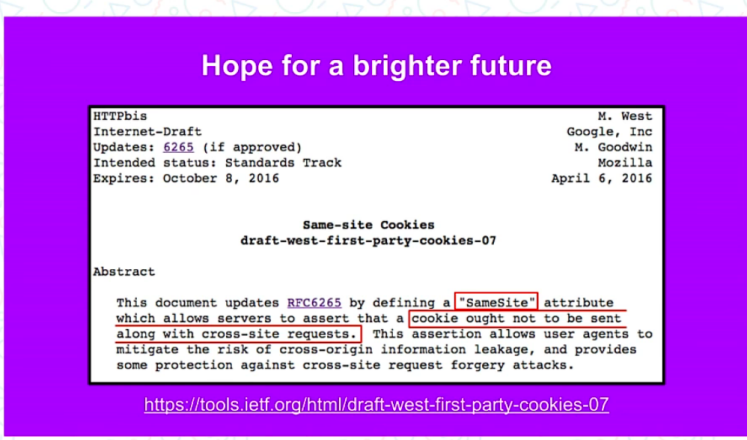
Clickjacking
// attack example // an iframe ( or an anchor) is invisible or transparent <iframe style="display:none;" src="javascript:/* dangerous stuff here */">"></iframe> // preventions 1, Frame busting. Attention: HTML5 iframesandboxattribute, IE iframesecurityattribute will prevent the Javascript in iframe from executing. if ( top.location != window.location ){ top.location = window.location } 2, HTTP header: X-Frame-Options can be used to indicate whether or not a browser should be allowed to render a page in a <frame>, <iframe>, <embed> or <object>. X-Frame-Options: deny X-Frame-Options: sameorigin X-Frame-Options: allow-from https://example.com/ // configure IIS, nginx,etc, please refer to https://developer.mozilla.org/en-US/docs/Web/HTTP/Headers/X-Frame-Options // configuring Express const helmet = require('helmet'); const app = express(); app.use(helmet.frameguard({ action: 'SAMEORIGIN' })); // Note: The Content-Security-Policy HTTP header has a frame-ancestors directive // which obsoletes this header for supporting browsers.
Anti ClickJacking Example
Method 1: Frame busting. If another html file loads login.html as iframe, when user enter this html in browser, the browser redirect automatically to login.html 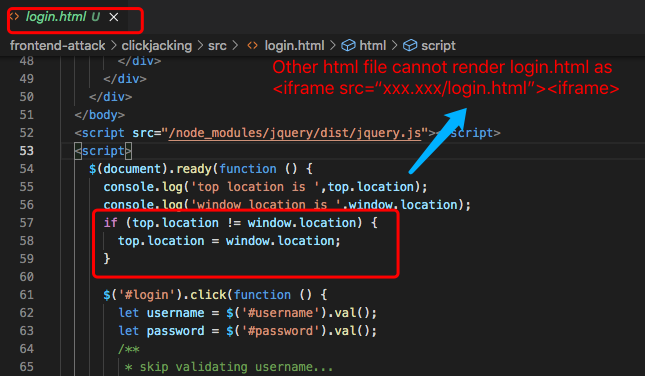 Method 2: Set X-Frame-Options as "sameorigin". On server1 (http://localhost:3001)Login.html is located in server1. 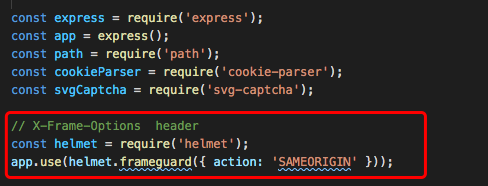 On server2 (http://localhost:3002), another webpage xframe1.html tries to load login.html as iframe. 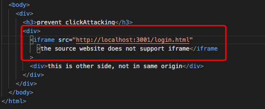 Because of the sameorigin policy, xframe1.html cannot load login.html correctly. By contrast, if xframe1.html is located in the same origin, it can load login.html. So xframe1.html can only load the files from the same origin as iframe element. It can prevent clickjacking.When a malicious webpage try to attack a same-policy-protected webpage as an iframe element, even if it is transparent or invisible, click it will not cause serious consequence.

Angular will add the X-XSRF-TOKEN header only
if the XSRF-TOKEN cookie was generated server-side with the
following options: Path = / , httpOnly = false
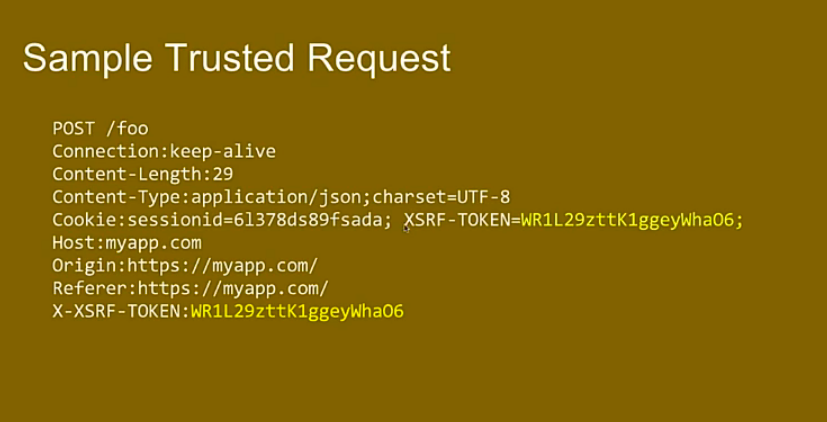
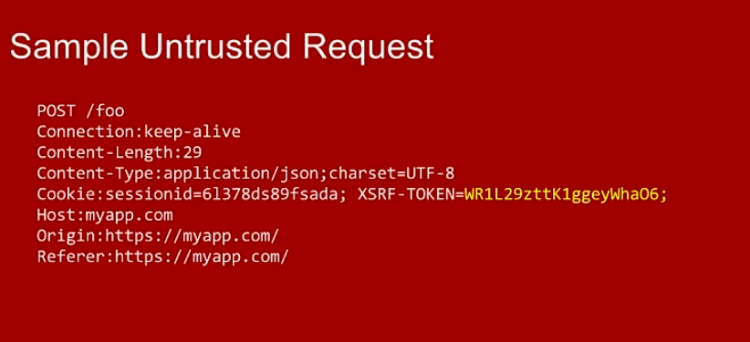
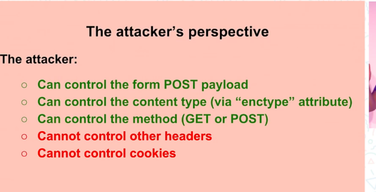
1, Client side: create an interceptor for add header "X-XSRF-TOKEN"
// xsrftoken.interceptor.ts
import { Injectable } from '@angular/core';
import {
HttpRequest,
HttpHandler,
HttpEvent,
HttpInterceptor,
} from '@angular/common/http';
import { Observable } from 'rxjs';
import { CookieService } from 'ngx-cookie-service';
@Injectable()
export class XsrftokenInterceptor implements HttpInterceptor {
private readonly tokenHeaderName = 'X-XSRF-TOKEN';
private readonly cookieName = 'XSRF-TOKEN';
constructor(public cookieService: CookieService) {}
intercept(
request: HttpRequest<unknown>,
next: HttpHandler
): Observable<HttpEvent<unknown>> {
let token;
let reqClone;
token = this.cookieService.get(this.cookieName);
if (token !== null && !request.headers.has(this.tokenHeaderName)) {
reqClone = request.clone({
headers: request.headers.set(this.tokenHeaderName, token),
withCredentials: true,
body: request.body,
});
console.log('request is', JSON.stringify(reqClone));
return next.handle(reqClone);
}
return next.handle(request);
}
}
// app.module.ts
providers: [
...
{
provide: HTTP_INTERCEPTORS,
useClass: XsrftokenInterceptor,
multi: true,
},
],
...
2, Server side: when user log in, set cookies for response; when user transfers money to other, compare the cookie "XSRF-TOKEN" to header "X-XSRF-TOKEN". Execute the transaction only when the two are equal.
// log in
let SESSION_ID = 'connect.sid';
let XSRF_TOKEN = 'XSRF-TOKEN';
let session = {};
app.post('/api/login', (req, res) => {
let { username, password } = req.body;
let user = userList.find(
(item) => item.username === username && item.password === password
);
if (user) {
// user login, cookie
const cardId = Math.random() + Date.now();
const token = cardId + ' ' + JSON.stringify(user);
session[cardId] = { user };
res.cookie(SESSION_ID, cardId);
res.cookie(XSRF_TOKEN, token);
res.json({ code: 0 }); // send JSON response
} else {
res.json({
code: 1,
error: `${username} does not exist or password mismatch`,
});
}
});
// transfer
app.post('/api/transfer', (req, res) => {
...
const token = req.header('X-XSRF-TOKEN');
if(!token || token !== req.cookies[XSRF_TOKEN]) {
return res.json({ code: 1, error: 'user did not log in or is not valid user .' });
}
...
});
The response header after login successfully (with cookies
information)
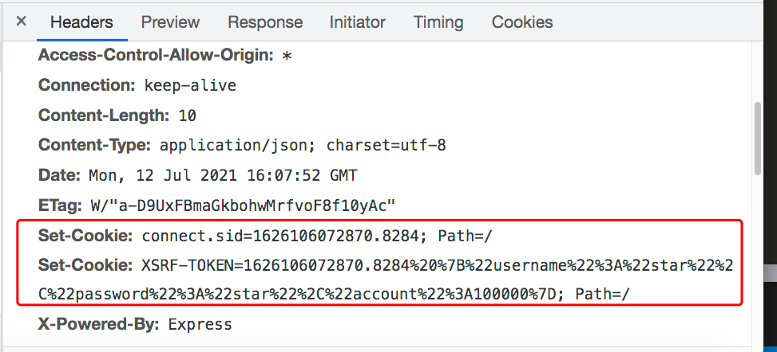
The request header when transfer (X-XSRF-TOKEN = XSRF-TOKEN)
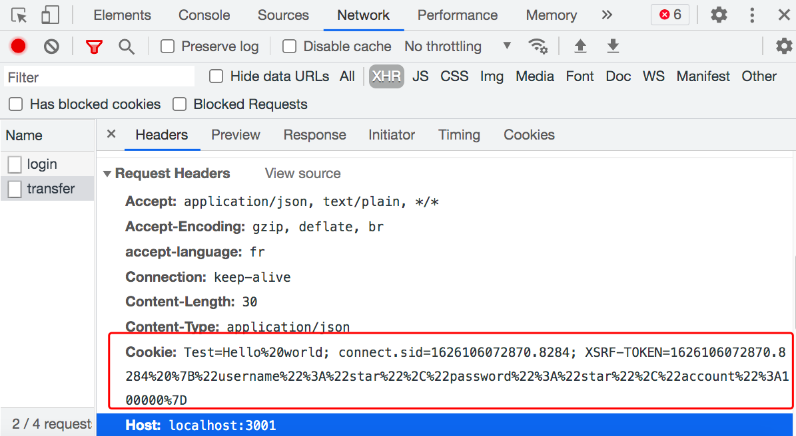
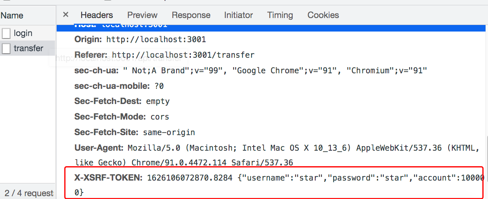
Source code is hosted on Github Front-end attacks
Security in Frameworks
-
Angular supplies many modules to prevent XSS or CSRF attacks,
including DomSanitizer, HttpClientXsrfModule, XSRFStrategy,
HttpClientJsonpModule, CookieXSRFStrategy, sessionStorage and
localStorage.
-
To systematically block XSS bugs, Angular treats all values
as untrusted by default. When a value is inserted into the
DOM from a template binding, or interpolation, Angular
sanitizes and escapes untrusted values. If a value was
already sanitized outside of Angular and is considered safe,
you can prevent automatic sanitization using bypass APIS
constructor(private sanitizer: DomSanitizer) { // javascript: URLs are dangerous if attacker controlled. // Angular sanitizes them in data binding, but you can // explicitly tell Angular to trust this value: this.dangerousUrl = 'javascript:alert("Hi there")'; this.trustedUrl = sanitizer.bypassSecurityTrustUrl(this.dangerousUrl); this.updateVideoUrl('PUBnlbjZFAI'); } <h4>An untrusted URL:</h4> // when clicking the link, nothing happened <p><a class="e2e-dangerous-url" [href]="dangerousUrl">Click me</a></p> <h4>A trusted URL:</h4> // An alert pops up when clicking the link <p><a class="e2e-trusted-url" [href]="trustedUrl">Click me</a></p> -
Only make use of bypassSecurityTrust family of APIS when
knowing the source of data. One common use is in the context
of an Angular API.
@Pipe({ name: ‘trustHtml’ }) export class TrustHtmlPipe implements PipeTransform { constructor(private sanitizer: DomSanitizer) { } transform(value) { return this.sanitizer.bypassSecurityTrustHtml(value); } } -
Ask yourself if dynamic component construction is really
necessary.In the following example, template variable can
introduce XSS attack easily.
function compileComponent(template: string) { @Component({ template: template }) class DynamicComponent implements AfterViewInit { // implementation } return DynamicComponent; }
-
To systematically block XSS bugs, Angular treats all values
as untrusted by default. When a value is inserted into the
DOM from a template binding, or interpolation, Angular
sanitizes and escapes untrusted values. If a value was
already sanitized outside of Angular and is considered safe,
you can prevent automatic sanitization using bypass APIS
-
React
-
According to
React document , by default, React DOM escapes any values embedded
in JSX before rendering them. Everything is converted
into a string before being rendered. This helps prevent XSS
attacks.
const title = response.potentiallyMaliciousInput; // This is safe: const element = <h1>{title}</h1>; -
In fact , React is not being "XSS safe". As long as
developers insert user input into DOM, there will be XSS.
Never directly use user input as props.
const props = potentiallyMaliciousUserInput; // Not safe return <Component {...props}></Component>; // Set HTML directly from React is not fafe. function createMarkup() { return {__html: 'First · Second'}; } function MyComponent() { return <div dangerouslySetInnerHTML={createMarkup()} />; }
-
According to
React document , by default, React DOM escapes any values embedded
in JSX before rendering them. Everything is converted
into a string before being rendered. This helps prevent XSS
attacks.